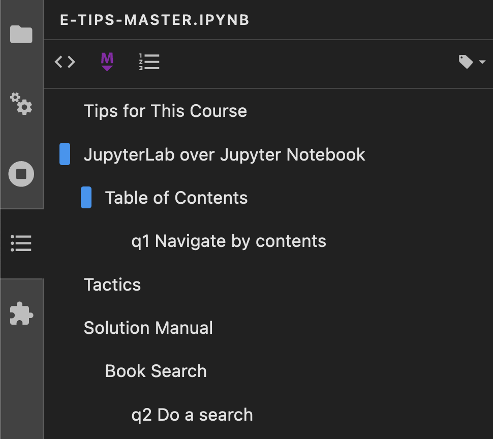

Tips for This Course
Contents
Tips for This Course¶
Purpose: This short exercise gives you a few tips for how to make this course easier and more effective.
JupyterLab over Jupyter Notebook¶
There are two primary tools for working with jupyter notebooks: Jupyter Lab and (the confusingly named) Jupyter Notebook. Both can be run from a terminal (jupyter lab or jupyter notebook) or from Anaconda Prompt.
I recommend you use Jupyter Lab (rather than Notebook): This is a more modern interface that provides a variety of useful features.
Table of Contents¶
Jupyter Lab includes table of contents (TOC) feature to help you navigate a notebook. Click the “three lines” button in the sidebar panel (pictured below) to display the TOC.

Clicking on headers in the TOC allows you to jump to points in the document, as you’ll learn in the next task.
Solution Manual¶
The solutions to all exercises are available in the online solution manual. If you ever get stuck on an exercise, make sure to check the solutions!
Tactics¶
Since all the solutions are available at the beginning of the course, it might be tempting to just read the solution manual instead of doing the exercises. Resist this temptation! You’ll get a lot more out of this course if you try the exercises on your own first, and consult the solution manual only when you get stuck.
Book Search¶
The solution manual website has an extremely useful search feature. If you click in the search bar at the top-left of the site (below the title), you can search across all of the exercise solutions.

q2 Do a search¶
Try searching for the phrase "real variability" in the solution manual. Use the search results to answer the questions under observations below.
Observations
What is “real variability”?
Real variability is any source of variability that can affect a physical outcome. This is in contrast with Error: Error (or erroneous variability) is any source of variability that corrupts a measurement.